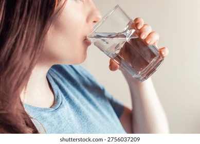

Como é feita a limpeza da água?

A limpeza da água, também chamada de tratamento da água, é feita em uma Estação de Tratamento de Água (ETA). Primeiro, a água é retirada de rios, lagos ou represas e levada até a estação. Depois, passa por várias etapas: na coagulação e floculação, são adicionados produtos químicos que juntam as pequenas sujeiras, formando flocos. Na decantação, esses flocos afundam e ficam no fundo dos tanques. Em seguida, acontece a filtração, quando a água passa por camadas de areia, cascalho e carvão que retiram as impurezas restantes. Depois, é feita a desinfecção com cloro, que elimina microrganismos que podem causar doenças. Por fim, a água pode receber flúor e é armazenada em reservatórios para ser distribuída às casas. Assim, ela fica própria para o consumo humano.
A importância do saneamento para a saúde e o meio ambiente
O saneamento básico é o conjunto de serviços essenciais — abastecimento de água potável, esgotamento sanitário, limpeza urbana e manejo de resíduos sólidos e drenagem das águas pluviais — que garantem a salubridade ambiental, a proteção da vida e o desenvolvimento sustentável.
Como contribuir para a economia da água?

- Reduzir o tempo no banho.
- Utilizar a descarga conscientemente.
- Fechar a torneira quando não estiver usando.
- Evitar deixar mangueiras ligadas sem necessidade.